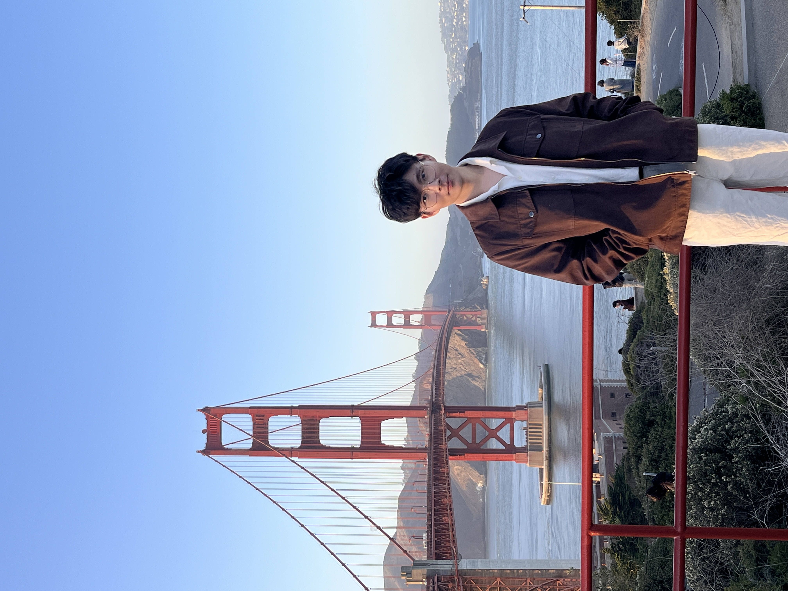

2026 — PRESENT
Graduate Research Assistant · Purdue
VIPER Lab, Electrical and Computer Engineering.
Advised by Prof. Fengqing (Maggie) Zhu.
Working on visual food understanding and vision-language models.
You can call me Raymond.
Understanding the visual world,
one meaningful detail at a time.
I am a graduate student in Electrical and Computer Engineering at Purdue University, advised by Prof. Fengqing (Maggie) Zhu. My research brings together computer vision and vision-language models to understand food and the world around us.

Connecting visual evidence with semantic knowledge through multimodal fusion, grounded captions, and data alignment.
Recognizing ingredients and segmenting food images to support more informative, image-based dietary assessment.
Exploring how vision-language agents can use visual tools and assess their reliability for nutrition estimation.
Target-aware data selection and grounded caption refinement help complementary vision-language experts understand subtle food details.
The approach selects relevant image–text pairs, refines their captions with a vision-language model, and adapts complementary retrieval experts. A hierarchical fusion strategy consults the VLM when the experts disagree.
Plug-and-play language injection modules bring ingredient-level semantic cues into visual features and segmentation queries.
LIM-F injects language information into multi-level visual features; LIM-Q introduces it into a Mask2Former-style decoder. Both use LLM-derived ingredient labels to improve fine-grained segmentation without a separate image–text pre-alignment stage.
VIPER Lab, Electrical and Computer Engineering.
Advised by Prof. Fengqing (Maggie) Zhu.
Working on visual food understanding and vision-language models.
Contributed to the Mobile Food Record app and led an undergraduate VIP team studying egocentric video, gaze, and object interactions with HD-EPIC.
Multimedia and Computer Vision Lab, advised by Prof. Wei-Ta Chu. Developed multimodal food segmentation methods through an NSTC-supported research project.
M.S. in Electrical and Computer Engineering
Thesis track
Undergraduate studies in Computer Science and Information Engineering
NCKU–Purdue program · Purdue exchange, 2025–2026
I welcome conversations about computer vision, multimodal learning, and AI for food and nutrition.